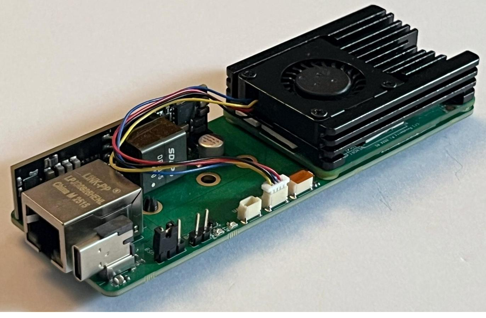

CM4 / CM5 Carrier Board
ProfessionalCompact 120 × 40 mm carrier for Raspberry Pi CM4 and CM5 with NVMe storage, Gigabit Ethernet, PoE, USB-C PD and peripheral expansion on a six-layer PCB.

| Form factor | 120 × 40 mm |
|---|---|
| PCB | 6-layer, after a 2-layer prototype |
| Modules | Raspberry Pi CM4 and CM5 |
| Power | PoE via SDAPO DP5405 Powered Device module (25 W, 5 V at about 5 A), USB-C PD (15 V / 3 A profile), local 5 V and 3.3 V rails |
| Interfaces | M.2 2260 M-Key NVMe (PCIe), Gigabit Ethernet, USB, microSD, UART, I²C (Qwiic), 4-pin PWM fan |
| Revisions | Rev 1 (production, GitHub repository) and Rev 2 (GitHub repository). Rev 2 adds the NVMe fix, CSI and HDMI (Hirose connectors) and an I²S daughtercard. |
- Role
- Sole designer, from requirements through schematic capture, six-layer PCB layout and prototype bring-up. Chose the components and placement within the size and cost requirements. Handled BOM, sourcing, supplier communication and PCBA ordering.
- Challenge and decision
- NVMe worked on the CM5 and failed to link on the CM4. The working CM5 cleared the PCIe routing, which pointed to control signals that differ between modules. In Rev 2 the M.2 enable state is derived from the carrier power state and the wake signal is pulled up.
- Result
- NVMe operates on both CM4 and CM5 in Rev 2.